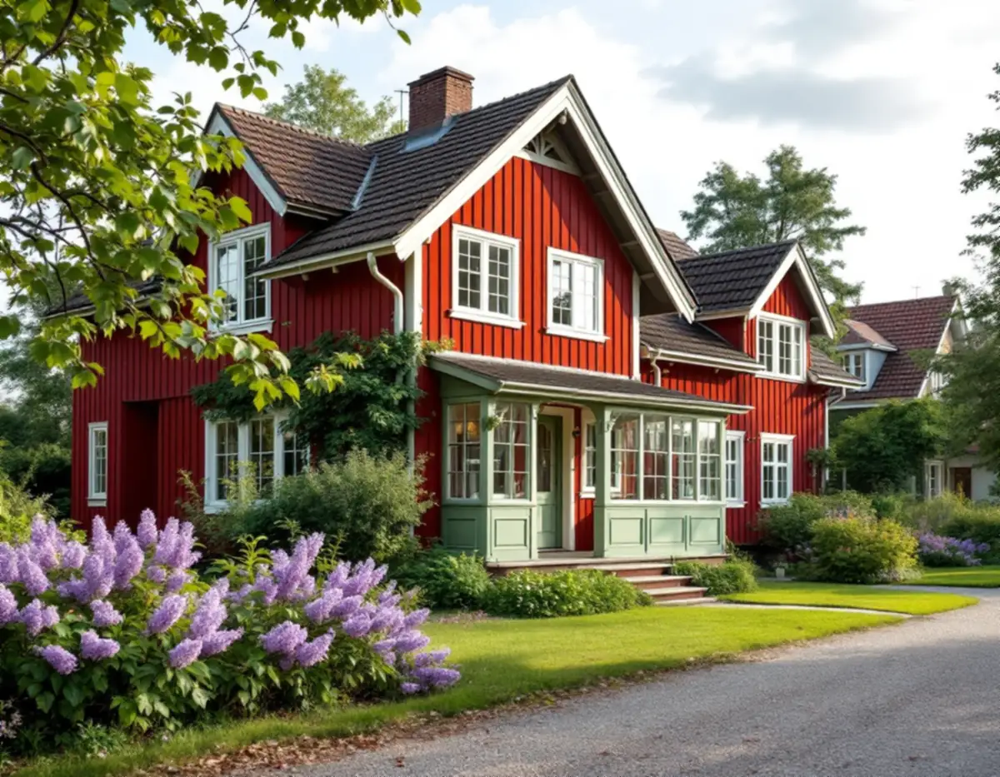
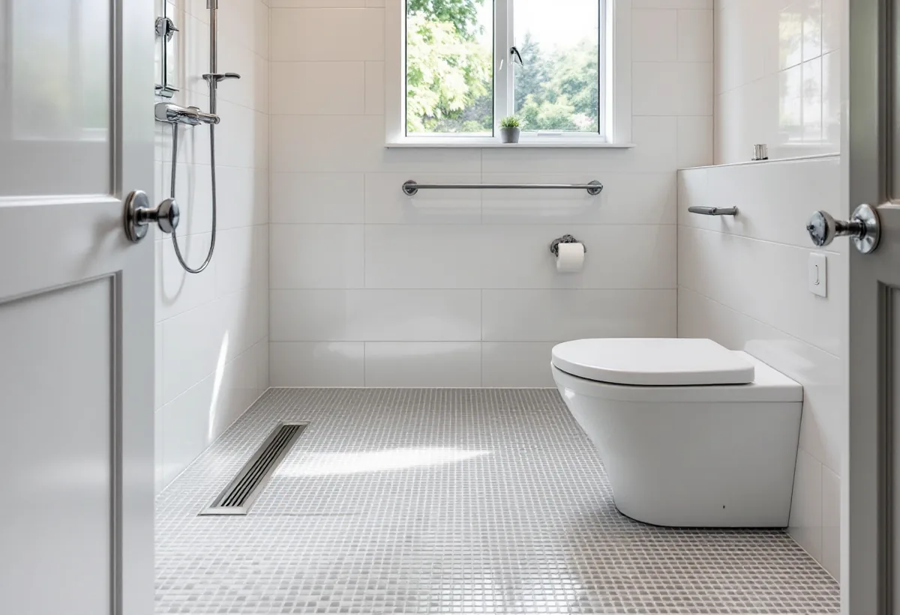

Platsbesök
Vi ser badrummet, golvbrunnen och vad som har byggts om tidigare.
I Spångas äldre villor har badrummet ofta en egen historia, eftersom husen har byggts om och till i omgångar. Och när badkaret blir svårt att kliva i blir frågan en annan: kan det bli en duschplats, och kan kommunen bidra? Geal Entreprenad AB river, bygger tätskikt och ytskikt och samordnar VVS och el, med gratis platsbesök och skriftligt kostnadsförslag.

Stadsmuseets text Ur Hem på landets arkiv berättar att det vid årsskiftet 1909–1910 fanns 272 villor med 1 134 invånare i Solhem. År 1909 hade Solhem blivit municipalsamhälle, ett första förslag till stadsplan kom 1910 och fastställdes 1919. I samhället byggde man ett varmbadhus, en tvättstuga och en skola, ordnade vägbelysning, gångbanor och avloppsdiken.
Solhem införlivades liksom större delen av Spånga med Stockholm 1949, och under 1950-talet blev stadsdelen i det närmaste fullbyggd. Många av de äldre villorna förändrades enligt texten kraftigt genom om- och tillbyggnader under 1960- och 1970-talen, och tomter styckades.
Att samhället byggde ett gemensamt varmbadhus säger något om hur husen var utrustade från början. Ett badrum i en äldre villa här kan därför vara från en senare ombyggnad, och det är den ombyggnadens rör, golv och golvbrunn vi möter när kaklet tas bort.

Den som har en bestående funktionsnedsättning kan söka bostadsanpassningsbidrag hos kommunen. 1177 nämner just att skapa en duschplats om du har svårt att ta dig i och ur badkaret som ett exempel. Anpassningen ska vara nödvändig och behovet ska inte gå att lösa enklare, till exempel med hjälpmedel. Bidraget gäller bara den bostad du bor i permanent, inte ett fritidshus, och det är bara fasta funktioner – sådant du inte tar med dig när du flyttar – som kan anpassas. Bor du i en bostadsrätt ska föreningen godkänna anpassningen.
Till ansökan behövs ett intyg om funktionsnedsättningen och vad den betyder i bostaden, till exempel från vårdcentralen. Kommunen utreder, gör ibland ett hembesök och fattar ett beslut, och det beslutet kan överklagas till förvaltningsrätten.
Skatteverket skriver att du inte kan få rotavdrag för arbete som du får bidrag eller annat ekonomiskt stöd för från stat, kommun eller region. Ska badrummet både anpassas och renoveras håller vi därför isär de två delarna i kostnadsförslaget.
Boverkets handbok om bostadsanpassningsbidrag förklarar att kommunen prövar bostadens skick enligt 8 § i lagen. Brister som eftersatt underhåll kan leda till avslag, men hela och fungerande funktioner ska inte göra det, även om de är omoderna. Skicket bedöms mot inredningen före anpassningen, så ett avslag ska inte grundas på att fuktskyddet inte skulle räcka efter att duschen installerats.
Att byta badkaret mot en duschplats räknas som en ändring av byggnaden enligt plan- och bygglagen, och den ändrade delen ska i princip uppfylla kraven för nya byggnader, med möjlighet att anpassa och göra avsteg. Bidraget ska räcka till en fullgod anpassning. Ibland kan en duschkabin med vattentäta väggar fungera, men även den är en ändring.
För oss betyder det att ett golv utan tröskel och med fall mot brunnen byggs med samma tätskikt som i ett vanligt badrum. Golvbrunnens ålder spelar roll: enligt GVK ska en brunn från före 1990 bytas vid renovering.
Ska fler delar av huset göras om finns mer under köksrenovering i Spånga och snickare i Spånga. Om tätskikt, fall och intyg läs mer på sidan om badrumsrenovering.
Vi ser badrummet, golvbrunnen och vad som har byggts om tidigare.
Vi reder ut vilka delar som är anpassning och vilka som är renovering.
Delarna redovisas var för sig, så att bidrag och ROT inte blandas ihop.
Badkaret och de gamla skikten tas bort och golvet byggs upp med fall mot brunnen.
Tätskiktet läggs, och installatörerna drar rör och el.
Du får intyg och produktblad att spara.
Rotavdraget är 30 procent av arbetskostnaden, högst 50 000 kr per person och år och högst 75 000 kr tillsammans med rutavdrag. Du ska äga bostaden när arbetet utförs.
Kakel och klinker, duschar, badkar och handfat och att byta golvbrunn ger avdrag i ett hus du äger. Material och resor gör det inte, och inte heller arbete som betalas med bidrag. Vi drar avdraget direkt på fakturan.
Vad den tidigare ombyggnaden har lämnat efter sig, om golvet måste byggas om för en duschplats utan tröskel och vilka ytskikt du väljer avgör mest. Platsbesöket är gratis och kostnadsförslaget skriftligt.
Tätskikt, golvbrunn, el, VVS och intyg.
Badrumsrenovering i Stockholm →Takbyte, takbesiktning och plåtarbeten.
Takläggare i Spånga →Solhem, Bromsten, Flysta och Sundby.
Takrenovering i Spånga →Riva och bygga nytt hus.
Byggföretag i Spånga →Trävillor och gruppbyggda radhus.
Fasadrenovering i Spånga →Villorna i Solhem.
Fönsterrenovering i Spånga →Massivt, lamell, fanér eller laminat.
Golvläggare i Spånga →Solhem, villastäder och kök i flera lager.
Köksrenovering i Spånga →Solhems färgskala och villorna kring stationen.
Målare i Spånga →Väggar, vindar och verandor i villastäderna.
Snickare i Spånga →Solceller, radarn och Solhem.
Takbyte i Spånga →Tapet som passar husets tid.
Tapetsering i Spånga →Villastäderna, stommen och ventilationen.
Totalrenovering i Spånga →